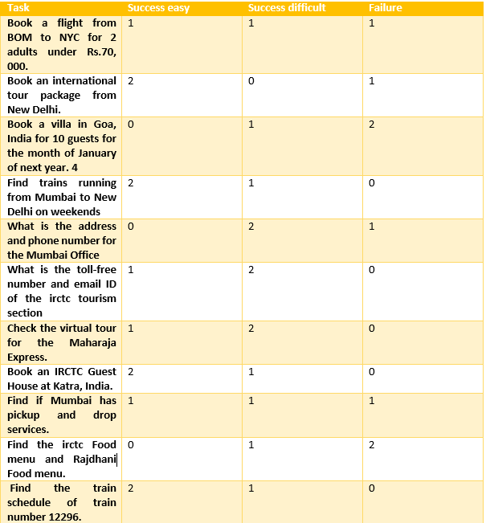

Performed usability testing to uncover the user experience when using the website, irctc.com
The interface being tested is irctc.co.in which is the official website of Indian Railway Catering and Tourism Corporation Limited. It is used for booking railway tickets, checking the statuses of trains, finding trains specific for user need, checking the ticket reservation status, finding out catering options during the train journey. One can also book flight tickets. Apart from this, it also has a tourism section which provides various attractions that are available throughout India. There is provision to book hotels and other accommodation throughout India. The usability test aims to test these basic features about the website on a desktop environment. The test also aims to check usability of the help and support information provided.
Subject
The usability study involved three user subjects one for each usability methodology namely the silent observer, the think aloud and the constructive interaction. The helper for the constructive interaction method was a member of the evaluation team. The three subjects were in the age range of 18-28 years with expert level of expertise with computers and technology. The users also were moderately frequent travellers and were proficient in using travel websites.
Environment
The interface was tested on a desktop platform in indoor settings.
Pre-Test questionnaire
The questionnaire started with age bracket question to understand the basic trend of user age on usage of travel interface and technology in general. Also payment becomes an issue if a user is under 18 years. Experience with computers was asked to determine if it can cause any problems in using the interface being tested. Travel information is asked to know if the people are familiar with other travel websites and if they have interest or motivation in using the travel websites. The questionnaire also tries to know about user habit of using tutorials when they face problem with a website. Lastly we try to accommodate and understand any special needs that a user may have which may affect the results of the usability study.
Task description
The tasks were designed to accomplish the basic functions that a user may perform with the travel interface. The task cover different functionalities present in different section of the website.
The table represents the task and number of users who finished or failed the tasks.
Post-test questionnaire
The questionnaire was aimed to get as much review and feedback from the user as possible about the interface. A multiple choice question format on the scale of 1-10 was adopted to provide an easy to answer way without burdening the user too much. A general mid or neutral number was also provided. A comment section was also provided at the end of each multiple choice question. The questions asked the user about the level of difficulty/ease with the system. It also asked about the terminologies used on the system, navigation used on the system, as well as their learning experience with the system. The feedback mechanism and error prevention mechanisms were also under scrutiny by the user. Also, it asked users about how many tasks were they able to perform and whether the system relied on them to remember a lot of data as well page structure to accomplish these tasks. Lastly, users were asked to comment and rate the error recovery and correction provided by the interface.
System Strength and Weaknesses
Lack of Consistency on the interface: Users found that the website lacked consistency in terms of colors used, font, webpage structure as well as the navigation system. The webpage structure was found to be inconsistent too. The most prominent consistency however was found to be in the menu structure of the webpages. Even the location and structure of the menus varied from page to page.
Lack of appropriate system status: Users found that the system does not provide enough informative feedback. The system status while loading a web page was also absent and the page took more time to load than the user had anticipated. The error state was displayed using alert boxes and after dismissing them, the user was unable to find out what was the error or if there was any error on the interface.
Slow speed of system: Some major processing/computing/data availability flaw lies in the system which leads to difficulty in interacting with the interface due to its high wait time. The users got easily frustrated and impatient.
Wall of text- lack of proper icons and multimedia: The lack of conventional clickable icons to represent actions makes the users’ task difficult and tedious as they have to read a lot of text. Lack of multimedia on the home page makes it look dull and intimidating. These factors make it difficult for the user to skim through the information.
Lack of user control: The system lacked in making the user feel in control of the interface. The interface wasn’t intuitive to use and some amount of learning was required. User could not control the amount of information presented to him.
Lack of Consistency on the interface: The way of presenting errors to users was not user friendly. The method not only failed to convey the actual meaning but was also misleading and incorrect sometimes. The interface did not use proper color or text to grab the users’ attention.
Inappropriate representation of error messages and wrong error messages: The way of presenting errors to users was not user friendly. The method not only failed to convey the actual meaning but was also misleading and incorrect sometimes. The interface did not use proper color or text to grab the users’ attention.
Lack of appropriate help options: The help section was not clearly organized or even presented on the screen. Furthermore, the help was not sufficient for anyone trying to solve a problem they faced while using the interface. There was no interactive help which made the user feel disconnected from the interface.
Empty states not represented well
No responsiveness of webpages
Suggested Improvemnts
Change in the color scheme and improvement on the visual representation would make the site more presenatable as well help them in comprehension of the information as well. Use bright colors and material design templates for websites as these make the websites aesthetically pleasing. Make use of icons and other multimedia. Choose icons such that they clearly match the real world objects.Stop usage of marque text as it is archaic.
Introduce a search box for quick search of terms as well as actions. Support NLP style queries to make the process more user friendly. Keep the search box visible at all times on the all the webpages at the same general location on the screen. Use autocomplete feature to reduce the effort on the side of the user to look for common type of information. Make the search results appear faster. Use appropriate loading indicator while the results are loading up. Show appropriate empty state screens in case there are no results. Point the user in some other direction that they may look into if they fail to get search results. Use lazy loading to show small number of results to the user that would generally fit the size of the available screen without scrolling.Index results using pagination to let user know where he is in the result section rather than just aimlessly scrolling.
Make the menu structure consistent throughout the website. Also logically group actions in menus and name them appropriately. Make the menu hierarchy with about 5-6 top level elements visible at one time. Don’t overwhelm the user too much menu options at a time. Use appropriate action words in the menu that have wide-spread usage. User behaviour must be studied to understand the way people logically relate actions and this must be used to structure the menus. Perform techniques like card sorting, tree sorting to come up with optimum solution.
Provide exhaustive help options and place such options on the screen where it is conventionally placed. Also, in general, organise the screens to follow the conventions of placing the different type of information in specific place so that the users find it easy to navigate. Provide categorized help which would include multimedia elements like videos too. Test the readability of the multimedia elements like images which represent screenshots to check if the user can actually make sense of the image and/or read it. The language used in the help documents must be very simple because one shouldn’t feel the need to find a help section for a help section.
Use appropriate colour representation and framing of error messages to make them more noticeable, useful and constructive. Provide verification or error prevention during filling out of forms and other data. Highlight the errored sections in the form rather than just mentioning the error in a pop up. Do not frame the error messages from a system point of view but rather frame them from a user point of view. Also guide the user to the corrective steps that they may need to perform.